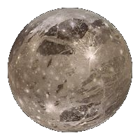

.png)
Um Pl치netuna
N치nar
�료칧 sem er einnig merkilegt vi칧 J칰p칤ter eru tunglin. �료u eru 79 talsinns en eru flest l칤til. En svo eru nokkur st칩r og merkileg. St칝rsta Tungl s칩lkerfissins er �쬬r "Ganymede"(2.634,1 km) og er �쬬칧 st칝rra en minsta reikistjarnan Merk칰r칤su (2.439,7km) og Pl칰t칩(1.188km). Ganymede er eina tungl s칩lkerfissins me칧 kjarna sem myndar segulsvi칧. Sem gerir �쬬칧 eins tungli칧 me칧 virkan Kjarna sem er 칰r m칬rgum ger칧um af m치lmi. Samr er Ganymede ekki �쮂뼚tur hlutur eins og m칬rg tungl og er b칰i칧 til 칰r 칤s og sil칤kat. Undir 칤shelluni er sj칩r, mikill sj칩r. �료r sem a칧 Ganymede er frekar n치l칝gt s칩lini og me칧 heitan kjarna er sj칩rinn gr칤칧alega st칩r. �료칧 g칝ti veri칧 meira af sj칩 vatni 치 Ganymede heldur en 치 J칬r칧inni. Ganymede er ekki a칧eins st칝rsta Tungl s칩lkerfissins heldur er �쬬칧 l칤ka 9 st칝rsti hlutur s칩lkerfissins. Tunglin eru merkileg vegna �쬰ss a칧 undir 칤shelluni 치 yfirbor칧i �쬰irra m치 finna sj칩 sem 치 sumum tunglum er me칧 n치tt칰rulegar hitaveitur eins og 치 J칬r칧inni. �료r g칝ti veri칧 l칤f 치 �료칧 b칰ast v칤sindamenn vi칧 a칧 finna l칤f �쬬r sem a칧 �쬬칧 er fullt af l칤fi 칤 kringum �쬰ssar veitur 치 J칬r칧inni. Eitt tungli칧 sem kallast IO er virkast hlutur s칩lkerfissins. Io er mi칧lungs st칩rt tungl(1.821,6 km) og �쬬r eru 400 virk eldfj칬ll. �료칧 eru miklar hitasveiplur 치 Io. Venjulega er -238춿c en vi칧 eldfj칬ll getur fari칧 yfir 1000춿c. �룐tta er einkennilegt tungl sem v칤sindamenn vilja sko칧a betur.
H칠r er Ganymede og Io
Ganymede

Io